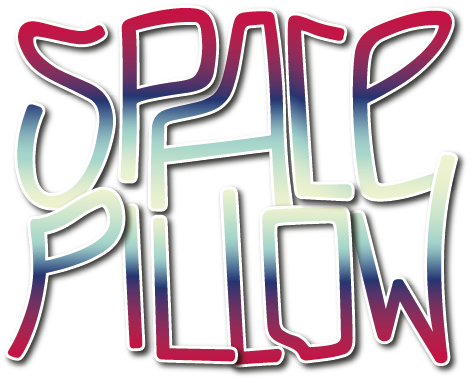

Sei mesi, 78 contenuti: tre a settimana (martedì, giovedì e sabato) tra reel, caroselli e post singoli, distribuiti in sette rubriche fisse. Tutti i testi sul prodotto sono quelli del sito. Ogni contenuto ha un codice e un tema unico nel registro, così il ciclo successivo (giugno – novembre 2027, altri 78) parte senza doppioni. Clicca su un contenuto per vedere grafica o reel, caption, hashtag, story di supporto e note di produzione.
Le grafiche e le copertine dei reel di tutto il ciclo, mese per mese. Clicca su una per vedere il carosello completo o il reel, la caption e le note. Il pallino in alto a destra indica il formato: rosa reel, azzurro carosello, viola post.
Ogni mese ha un tema legato alla stagione e alle ricorrenze. Ogni contenuto ha una story di supporto (sondaggi, quiz, box domande) per tenere viva la community.
Ogni contenuto appartiene a una sola rubrica. Ogni mese ogni rubrica esce due volte, «Artigiani del riposo» una: 13 contenuti al mese. Dentro le rubriche girano le serie (una taglia alla volta, un plus alla volta, una tappa alla volta, un regalo alla volta, una recensione alla volta).
| Tipologia | Formato | A cosa serve |
|---|
Orari suggeriti: martedì 12:30, giovedì 18:30, sabato 10:30 (con poche eccezioni per auguri e ricorrenze). Scegli il mese, poi filtra per formato o rubrica.
Tutte le grafiche seguono il moodboard: cielo notturno viola, stelle e nuvole pastello, titoli Montserrat in maiuscolo con una parola evidenziata in crema, card chiare con angoli arrotondati e foto dello shooting.
Aa
Montserrat · Bold e ExtraBold per i titoli, Semibold e Regular per i testi.
Logo ufficiale (file inviato il 20 novembre), usato in tutte le grafiche e nei reel.
Diamo del tu ai genitori e parliamo ai bambini come a «piccoli astronauti»: missioni, stelle, avventure, mai paura o allarmismi.
Una idea per slide, frasi brevi, benefici semplici: supporto ergonomico, anallergico, traspirante, lavabile, 4 taglie per età.
Su prodotto, taglie, kit, rituale, recensioni e azienda usiamo le frasi del sito così come sono, compresa l'avvertenza sul pediatra. Niente numeri o promesse che il sito non contiene.
Fonte: il sito nella cartella «Space Pillow/site». Le statistiche e i confronti che compaiono sulla versione online di spacepillow.ch non sono nel sito nuovo e quindi non li ho usati.
| Testo | Sezione del sito | Contenuti |
|---|
Il ciclo 1 (dicembre – maggio) è prodotto. Il ciclo 2 (1 giugno – 27 novembre 2027) ha già 78 temi riservati, uno per data, controllati contro il registro: nessuno ripete un tema del ciclo 1.
Ogni riga diventa un contenuto completo quando si produce il ciclo 2, con le stesse regole del ciclo 1. Il materiale qui sotto va chiesto a HOPI prima di iniziare.
| Data | Rubrica | Formato | Serie | Tema di lavoro | Note |
|---|
Ogni contenuto ha un ID (SP-C1-001…), una chiave tema, la rubrica, la serie, il titolo, la caption e le foto usate. Il registro è nel repository GitHub (data/registro.json).
tools/verifica.py blocca temi, titoli e date doppi, caption troppo simili (le frasi del sito non contano), caption oltre 2200 caratteri. Segnala la stessa foto principale entro 28 giorni e i mesi sbilanciati.
tools/esporta_metricool.py genera il CSV con le colonne del modello Metricool e i link alle immagini e ai video pubblicati su GitHub Pages.
La stessa struttura è nella cartella sul Mac (divisa per mese) e nel repository GitHub Pages da cui Metricool prende immagini e video.